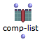
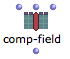
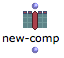

OpenMusic DocumentationHiérarchie de section : OM 6.6 User Manual > Basic Tools > Array > Class-Array Tools
OpenMusic DocumentationHiérarchie de section : OM 6.6 User Manual > Basic Tools > Array > Class-Array Tools
Navigation : page précédente | page suivante
Attention, votre navigateur ne supporte pas le javascript ou celui-ci à été désactivé. Certaines fonctionnalités de ce guide sont restreintes.
Class-Array Tools Overview
The values of array components can be accessed and modified via specific tools. These are especially designed for advanced applications, in particular in the OMChroma project, where synthesis parameters are specified using subclasses of class-array . These applications allow the access and extension of specified parameters at synthesis time.
To access these tools, select the the Functions/Basic Tools/Array menu.

These functions mostly operate on array components – or columns –, since they are transverse to the different fields – or lines – that were specified via the inputs of the array box.
Instances of the internal class component are returned and manipulated by these functions.
More information on these functions and their arguments is available in the online function reference – type d.
Accessing Array Data
Functions
| get-comp returns the nth component of an array. | |
| comp-list returns a list of values in a component, corresponding to the different array fields. | |
| comp-field returns the value of a specific field in a given component. This field can be specified by an index (number) or by a name (string). |
More information on these functions and their arguments is available in the online function reference – type d .
Example : Getting the Value of a Chord from a Class-Array

Here,
- get-comp returns the value of the second component , or column, of the class-array
- comp-list returns the list of values belonging to the second column of the class- array : a chord and two ordinates
- comp-field returns the value of the first field , or line, corresponding to the second column : a chord.
Remember that numbering starts at 0, consequently, 0 = 1st element, 1 = 2nd element...
Modifying Array Data
Functions
|  | comp-list can also set the list of values of a given components via an optional second input. |
|  | comp-field can also set the value of a given field of the components via an optional third input. This field can be specified by an index (number) or by a name (string). |
|  | new-comp function allows to create a new component with a given list of values. |
| add-comp adds a component at a given position in the array. | |
| remove-comp removes a component from the array. |
Example : Modifying and Re-injecting a Component in an Array

|
Here,
|
Permanent Modification of the Object
These functions are destructive : the input parameters, that is, the array or its internal components are modified at each evaluation. In the previous example, the array on the top of the figure gets one new component each time add-comp is evaluated.
Références :
Plan :
- OpenMusic Documentation
- OM 6.6 User Manual
- Introduction
- System Configuration and Installation
- Going Through an OM Session
- The OM Environment
- Visual Programming I
- Visual Programming II
- Basic Tools
- Curves and Functions
- Array
- Class-Array Object
- Class-Array Editor
- Class-Array Tools
- TextFile
- Picture
- Score Objects
- Maquettes
- Sheet
- MIDI
- Audio
- SDIF
- Lisp Programming
- Errors and Problems
- OpenMusic QuickStart
Navigation : page précédente | page suivante
A propos...(c) Ircam - Centre Pompidou